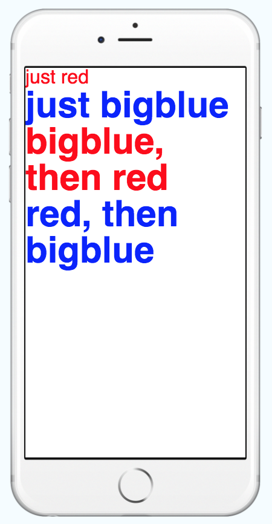

Style
- 架構 Component 樣式的元素
- 使用 Object 來編寫樣式屬性
- style 等於是一個 props
- 遵循 web 上的 css 命名
- 駝峰式的屬性名稱，css 命名改為小駝峰
例如:
font-size在 React Native 為fontSize - style props 可以傳入 array ，若有同屬性的樣式，後面的會蓋掉前面的
- StyleSheet 是一個類似 CSS StyleSheets 的抽象層
- 普通元件不支援 transform，需轉換成動畫元件才能使用
StyleSheet 優點
- 提高程式質量
- 從 render 當中的抽離 inline-style 樣式，可以使程式碼更清晰易懂
- 給樣式命名對於 Component 可以提高可讀性
- 提高性能
- 創建樣式表，後續可以通過 ID 來引用樣式，而不是每次都創建新的對象
- 使用 StyleSheet 新增 style object，可以把樣式變成 ID 往 child component 傳遞，提高效能
傳入 Object
// 這種寫法稱為 inline-style
<Text style={{ fontSize: 16, color: '#ff0000' }}>just red</Text>
傳入 Array
const textStyle = [
{
fontSize: 16,
color: '#ff0000'
},
{
fontWeight: 'bold'
}
];
<Text style={textStyle}>just red</Text>;
根據變數切換 style
const redStyle= {
color: '#ff0000',
};
const isRed = true;
<Text style={[{ fontWeight: 'bold' }, isRed && redStyle]}>just red</Text>
// 或是
<Text style={[{ fontWeight: 'bold' }, isRed ? redStyle : {}]}>just red</Text>
使用 StyleSheet
const styles = StyleSheet.create({
big: {
fontWeight: 'bold',
fontSize: 16,
},
red: {
color: 'red',
},
});
<Text style={styles.red}>just red</Text>
<Text style={[ styles.big, styles.red]}>just red</Text>
完整範例
import React, { Component } from 'react';
import { StyleSheet, Text, View } from 'react-native';
export default class LotsOfStyles extends Component {
render() {
return (
<View>
<Text style={{ fontSize: 16, color: '#ff0000' }}>just red</Text>
<Text style={styles.bigblue}>just bigblue</Text>
<Text style={[styles.bigblue, styles.red]}>bigblue, then red</Text>
<Text style={[styles.red, styles.bigblue]}>red, then bigblue</Text>
</View>
);
}
}
const styles = StyleSheet.create({
bigblue: {
color: 'blue',
fontWeight: 'bold',
fontSize: 30
},
red: {
color: 'red'
}
});

線上範例: https://snack.expo.io/@dmoon/style-sample
進階使用
根據不同裝置顯示 style 1
import { StyleSheet, Platform } from 'react-native';
const styles = StyleSheet.create({
text: {
fontSize: 16,
...Platform.select({
ios: {
color: 'red'
},
android: {
color: 'blue'
}
})
}
});
<Text style={styles.text} />;
根據不同裝置顯示 style 2
F8APP 封裝 StyleSheet
export function create(styles) {
const platformStyles = {};
Object.keys(styles).forEach(name => {
let { ios, android, ...style } = { ...styles[name] };
if (ios && Platform.OS === 'ios') {
style = { ...style, ...ios };
}
if (android && Platform.OS === 'android') {
style = { ...style, ...android };
}
platformStyles[name] = style;
});
return StyleSheet.create(platformStyles);
}
使用 F8StyleSheet
import F8StyleSheet from 'F8StyleSheet.js';
const styles = F8StyleSheet.create({
text: {
fontSize: 16,
ios: {
color: 'red'
},
android: {
color: 'blue'
}
}
});
<Text style={styles.text} />;
動畫 Style
state = {
fadeAnim: new Animated.Value(0), 0
}
Animated.timing( // Animate over time
this.state.fadeAnim, // The animated value to drive
{
toValue: 1, // Animate to opacity: 1 (opaque)
duration: 10000, // Make it take a while
}
).start();
<Animated.View // Special animatable View
style={{
opacity: this.state.fadeAnim, // Bind opacity to animated value
}}
>
{this.props.children}
</Animated.View>
延伸閱讀